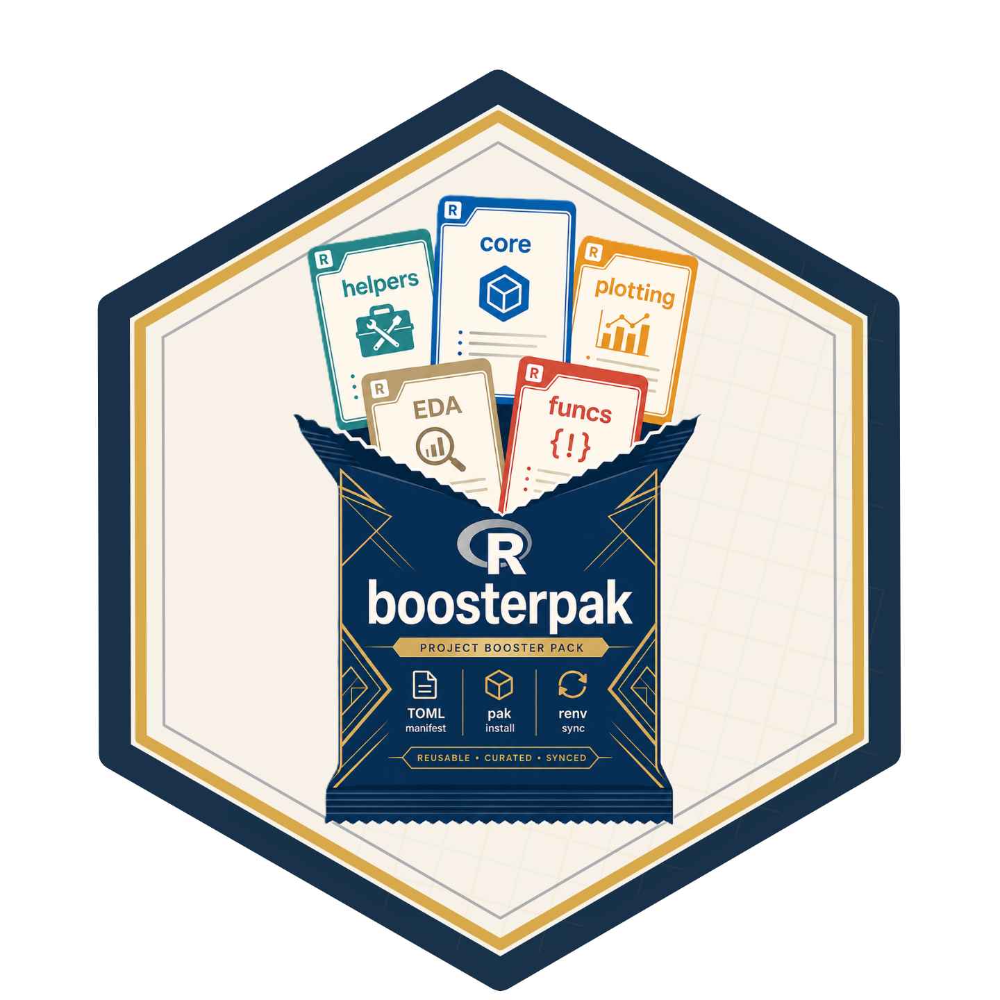

boosterpak is an R package for declaring project package intent in a human-edited boosters.toml file. It resolves named “booster” packs from project, user, and built-in scopes, reuses locally available packages with renv::hydrate() when possible, installs anything still missing with pak, writes explicit startup library() calls to boosters/attach.R, and uses renv for project-local libraries and lockfiles.
1. Install pak
install.packages("pak")2. Install boosterpak
pak::pkg_install("seanthimons/boosterpak")3. Initialize the project
boosterpak::init(renv = "yes", rprofile = "yes")init() writes boosters.toml, creates boosters/packs/, optionally writes air.toml, manages the recommended .Rprofile startup hook, and can initialize project-local renv. With renv = "yes", it bootstraps renv, pak, and boosterpak into the project library and snapshots those workflow packages before any restart is needed.
4. Sync the project
boosterpak::sync()Typical Workflow
flowchart TD
A([Start or clone project]) --> B(["Run init()"])
B --> C([Declare reusable intent])
C --> D(["Run add_pack()"])
C --> E(["Run add_function()"])
D --> F(["Run sync()"])
E --> F
F --> G[Hydrate from local libraries]
G --> H[Install remaining with pak]
H --> A1[Write boosters/attach.R]
A1 --> I[Snapshot declared packages]
F --> J[Helper files copied into boosters]
I --> K([Edit code and helper files])
J --> K
K --> L(["Run save_pack()"])
L --> M[Flat package pack or nested function pack]
M --> N(["Run promote_pack()"])
N --> O(["Reuse with add_pack() in another project"])
O --> D
classDef userAction fill:#e8f3ff,stroke:#1f6feb,color:#0b1f3a;
classDef packageAction fill:#f6f8fa,stroke:#6e7781,color:#24292f;
class A,B,C,D,E,F,K,L,N,O userAction;
class G,H,A1,I,J,M packageAction;The usual loop is to initialize once, add packs and helper functions as project intent, run sync(), then capture a useful baseline with save_pack(). Additive installs hydrate plain-name packages from local/user libraries before downloading, install any remaining packages with pak, and write boosters/attach.R for startup library() calls. Package-only packs stay flat at boosters/packs/<name>.toml; packs that carry copied helper files use boosters/packs/<name>/<name>.toml plus boosters/packs/<name>/functions/.
Add a Pack
boosterpak::add_pack("example")The built-in pack catalog contains:
-
core: minimal bootstrap dependencies,pakandrenv. -
eda: analysis helpers includingfs,here,janitor,rio, core tidyverse packages,scales,glue,digest,skimr, and bundled helper functions. -
example: small documented example that installscli. -
scaffold-analysis: installsfsandhereand carries a helper for a compact analysis folder scaffold. -
github-example: installsComptoxRfromseanthimons/ComptoxR.
Packs can mix ordinary CRAN package names with source-specific install specs. Declare every package in packages, then add a [sources] entry only for packages that should come from somewhere else:
name = "plotting"
description = "Plotting packages from CRAN and GitHub."
packages = ["ggplot2", "patchwork", "ggtext"]
[sources]
"ggtext" = "wilkelab/ggtext"In this pack, ggplot2 and patchwork install by package name, while ggtext uses the GitHub source spec.
Attachment is separate from installation. Missing attach means a pack attaches its direct packages; packs can also use attach = true, attach = false, or attach = ["pkg1", "pkg2"]. The top-level [attach] table can add packages with declared, remove packages with exclude, or set enabled = false to remove the managed boosters/attach.R file. Workflow packages from core and [extras], such as pak, renv, and boosterpak, are installed but not attached unless explicitly listed in [attach].declared.
Pack mutation is additive. Removing a pack updates boosters.toml and can run sync, but it does not uninstall packages.
By default, add_pack() and sync(mode = "apply") use hydrate = TRUE, so ordinary CRAN-style package names can be copied from renv-discoverable local libraries before pak downloads anything. Source-specific declarations, such as GitHub remotes in [sources], skip hydration and install through their declared spec. Use hydrate = FALSE for stricter first-run installs that should go straight to pak.
Capture and Reuse Packs
boosterpak::save_pack("project_baseline")
boosterpak::promote_pack("project_baseline")save_pack() writes a TOML snapshot of the currently resolved project packages and, by default, the helper functions listed in [functions].installed. Use functions = "all" to capture every boosters/fn_*.R file, functions = "none" for a flat package-only pack, from = "core" to fork one existing pack, or scope = "user" to write directly to the machine-wide user pack directory. promote_pack() and demote_pack() copy flat package-only packs as single files and nested function-bearing packs as whole directories.
Restore from a Lockfile
boosterpak::sync(mode = "restore")sync(mode = "apply") treats boosters.toml as intent and renv.lock as downstream output. It may hydrate from local libraries before installing the remaining declared packages with pak, then writes boosters/attach.R before snapshot. sync(mode = "restore") is the explicit path for exact lockfile restoration and does not hydrate.
Troubleshooting 0.5 Init Projects
If a project was initialized with boosterpak 0.5 and a restart made boosterpak unavailable inside renv, run this once without relying on boosterpak being loadable:
install.packages("renv")
renv::install(c("pak", "seanthimons/boosterpak"))
renv::snapshot(packages = c("renv", "pak", "boosterpak"), prompt = FALSE)Then restart R in the project and run:
boosterpak::sync()Inspect Status
boosterpak::status()
boosterpak::list_packs()status() reports config validity, declared and resolved packs, package counts, missing direct packages, attach package count and file presence, function drift or missing materialized files, pack catalog counts, renv state, lockfile presence, and the .Rprofile hook.
Current development includes function materialization, pack capture/promotion, and broader project status reporting; pruning remains out of scope.